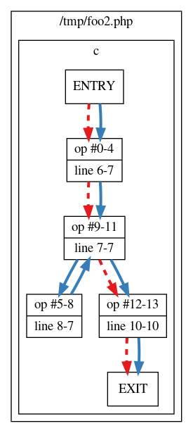

Documentation - all functions
This section describes all available functions available in Xdebug.
var_dump( mixed ...$var ) : void #
Displays detailed information about a variable
This function is overloaded by Xdebug, see the description for xdebug_var_dump().
xdebug_break() : bool #
Emits a breakpoint to the debug client
This function makes the debugger break on the line it is called from, as if a normal file/line breakpoint was set on this line through the debugger protocol.
The function returns true if a debugging session is (now) active,
and the breakpoint was succesfully set. It returns false if a
debugging session was not active and could not be activated.
xdebug_call_class( int $depth = 2 ) : mixed #
Returns the calling class
This function returns the name of the class that defined the current method,
NULL if the stack frame does not exist, or FALSE if
no class is associated with this call.
Example:
<?php
class Strings
{
static function fix_string($a)
{
echo
xdebug_call_class().
"::".
xdebug_call_function().
" is called at ".
xdebug_call_file().
":".
xdebug_call_line();
}
}
$ret = Strings::fix_string( 'Derick' );
?>
Returns:
Called @ /home/httpd/html/test/xdebug_caller.php:17 from ::{main}
To retrieve information from earlier stack frames, use the optional
$depth argument. A value of 1 returns
the call information of the method that executed xdebug_call_class():
Example:
<?php
class Strings
{
static function fix_string( $a )
{
echo
xdebug_call_class( 1 ).
"::".
xdebug_call_function( 1 ).
" is called at ".
xdebug_call_file( 1 ).
":".
xdebug_call_line( 1 );
}
}
$ret = Strings::fix_string( 'Derick' );
?>
Returns:
Strings::fix_string is called at /home/httpd/html/test/xdebug_caller:17
A value of 2 (the default) returns the call information of the
"grand parent" of the current method:
Example:
<?php
class Strings
{
static function fix_string( $a )
{
echo
xdebug_call_class( 2 ).
"::".
xdebug_call_function( 2 ).
" is called at ".
xdebug_call_file( 2 ).
":".
xdebug_call_line( 2 );
}
static function fix_strings( array $a )
{
foreach ( $a as $element )
{
self::fix_string( $a );
}
}
}
$ret = Strings::fix_strings( [ 'Derick' ] );
?>
Returns:
Strings::fix_strings is called at /home/httpd/html/test/xdebug_caller:25
A value of 0 returns the call information of the call to
corresponding xdebug_call_* method:
Example:
<?php
class Strings
{
static function fix_string( $a )
{
echo
xdebug_call_class( 0 ).
"::".
xdebug_call_function( 0 ).
" is called at ".
xdebug_call_file( 0 ).
":".
xdebug_call_line( 0 );
}
static function fix_strings( array $a )
{
foreach ( $a as $element )
{
self::fix_string( $a );
}
}
}
$ret = Strings::fix_strings( [ 'Derick' ] );
?>
Returns:
::xdebug_call_function is called at /home/httpd/html/test/xdebug_caller:13
xdebug_call_file( int $depth = 2 ) : mixed #
Returns the calling file
This function returns the filename from where the current function/method
was executed from, or NULL if the stack frame does not exist
To retrieve information from earlier stack frames, use the optional
$depth argument.
For examples and more extensive information, see xdebug_call_class().
xdebug_call_function( int $depth = 2 ) : mixed #
Returns the calling function/method
This function returns the name of the current function/method, NULL if the stack frame does not exist, or FALSE if the stack frame has no function/method information
To retrieve information from earlier stack frames, use the optional
$depth argument.
For examples and more extensive information, see xdebug_call_class().
xdebug_call_line( int $depth = 2 ) : mixed #
Returns the calling line number
This function returns the line number from where the current function/method was
called from, or NULL if the stack frame does not exist
To retrieve information from earlier stack frames, use the optional
$depth argument.
For examples and more extensive information, see xdebug_call_class().
xdebug_code_coverage_started() : bool #
Returns whether code coverage is active
Returns whether code coverage has been started.
Example:
<?php
var_dump(xdebug_code_coverage_started());
xdebug_start_code_coverage();
var_dump(xdebug_code_coverage_started());
?>
Returns:
bool(false) bool(true)
xdebug_debug_zval( string ...$varname ) : void #
Displays information about a variable
This function displays structured information about one or more variables that includes its type, value and refcount information. Arrays are explored recursively with values. This function is implemented differently from PHP's debug_zval_dump() function in order to work around the problems that that function has because the variable itself is actually passed to the function. Xdebug's version is better as it uses the variable name to lookup the variable in the internal symbol table and accesses all the properties directly without having to deal with actually passing a variable to a function. The result is that the information that this function returns is much more accurate than PHP's own function for showing zval information.
Support for anything but simple variable names (such as "a[2]" below) is supported since Xdebug 2.3.
Example:
<?php
$a = array(1, 2, 3);
$b =& $a;
$c =& $a[2];
xdebug_debug_zval('a');
xdebug_debug_zval("a[2]");
?>
Returns:
a: (refcount=2, is_ref=1)=array ( 0 => (refcount=1, is_ref=0)=1, 1 => (refcount=1, is_ref=0)=2, 2 => (refcount=2, is_ref=1)=3) a[2]: (refcount=2, is_ref=1)=3
xdebug_debug_zval_stdout( string ...$varname ) : void #
Returns information about variables to stdout
This function displays structured information about one or more variables that includes its type, value and refcount information. Arrays are explored recursively with values. The difference with xdebug_debug_zval() is that the information is not displayed through a web server API layer, but directly shown on stdout (so that when you run it with Apache in single process mode it ends up on the console).
Example:
<?php
$a = array(1, 2, 3);
$b =& $a;
$c =& $a[2];
xdebug_debug_zval_stdout('a');
Returns:
a: (refcount=2, is_ref=1)=array ( 0 => (refcount=1, is_ref=0)=1, 1 => (refcount=1, is_ref=0)=2, 2 => (refcount=2, is_ref=1)=3)
xdebug_dump_superglobals() : void #
Displays information about super globals
This function dumps the values of the elements of the super globals as specified with the xdebug.dump.* php.ini settings. For the example below the settings in php.ini are:
Example:
xdebug.dump.GET=*
xdebug.dump.SERVER=REMOTE_ADDR
Query string:
?var=fourty%20two&array[a]=a&array[9]=b
Returns:
| Dump $_SERVER | ||||
|---|---|---|---|---|
$_SERVER['REMOTE_ADDR'] = | string '127.0.0.1' (length=9) | |||
| Dump $_GET | ||||
$_GET['var'] = | string 'fourty two' (length=10) | |||
$_GET['array'] = | array 'a' => string 'a' (length=1) 9 => string 'b' (length=1) | |||
xdebug_get_code_coverage() : array #
Returns code coverage information
Returns a structure which contains information about which lines were executed in your script (including include files). The following example shows code coverage for one specific file:
Example:
<?php
xdebug_start_code_coverage(XDEBUG_CC_UNUSED | XDEBUG_CC_DEAD_CODE);
function a($a) {
return;
echo $a * 2.5;
}
function b($count) {
if ($count > 25) {
echo "too much\n";
}
for ($i = 0; $i < $count; $i++) {
a($i + 0.17);
}
}
b(6);
b(10);
var_dump(xdebug_get_code_coverage());
?>
Returns:
array
'/home/httpd/html/test/xdebug/docs/xdebug_get_code_coverage.php' =>
array (size=11)
5 => int 1
6 => int -2
7 => int -2
10 => int 1
11 => int -1
13 => int 1
14 => int 1
16 => int 1
18 => int 1
19 => int 1
21 => int 1The information that is collected consists of an two dimensional array with as primary index the executed filename and as secondary key the line number. The value in the elements represents whether the line has been executed or whether it has unreachable lines.
The returned values for each line are:
1: this line was executed-1: this line was not executed-2: this line did not have executable code on it
-1 is only returned when the XDEBUG_CC_UNUSED
is enabled and value -2 is only returned when both
XDEBUG_CC_UNUSED and XDEBUG_CC_DEAD_CODE are enabled
when starting Code Coverage Analysis through xdebug_start_code_coverage().
If path and branch checking has been enabled with the
XDEBUG_CC_BRANCH_CHECK flag to xdebug_start_code_coverage()
then the returned format is different. The lines array is returned in
a sub-array element lines, and separate information is returned
for each function in the functions element.
The following example illustrates that.
Example:
<?php
xdebug_start_code_coverage(XDEBUG_CC_UNUSED | XDEBUG_CC_DEAD_CODE);
function c($count) {
for ($i = 0; $i < $count; $i++) {
$i += 0.17;
}
}
c(10);
var_dump(xdebug_get_code_coverage());
?>
Returns:
array (size=1)
'/tmp/foo2.php' =>
array (size=2)
'lines' =>
array (size=5)
5 => int 1
6 => int 1
8 => int 1
10 => int 1
12 => int 1
'functions' =>
array (size=1)
'c' =>
array (size=2)
'branches' =>
array (size=4)
0 =>
array (size=7)
'op_start' => int 0
'op_end' => int 4
'line_start' => int 4
'line_end' => int 5
'hit' => int 1
'out' =>
array (size=1)
0 => int 9
'out_hit' =>
array (size=1)
0 => int 1
5 =>
array (size=7)
'op_start' => int 5
'op_end' => int 8
'line_start' => int 6
'line_end' => int 5
'hit' => int 1
'out' =>
array (size=1)
0 => int 9
'out_hit' =>
array (size=1)
0 => int 1
9 =>
array (size=7)
'op_start' => int 9
'op_end' => int 11
'line_start' => int 5
'line_end' => int 5
'hit' => int 1
'out' =>
array (size=2)
0 => int 12
1 => int 5
'out_hit' =>
array (size=2)
0 => int 1
1 => int 1
12 =>
array (size=7)
'op_start' => int 12
'op_end' => int 13
'line_start' => int 8
'line_end' => int 8
'hit' => int 1
'out' =>
array (size=1)
0 => int 2147483645
'out_hit' =>
array (size=1)
0 => int 0
'paths' =>
array (size=2)
0 =>
array (size=2)
'path' =>
array (size=3)
0 => int 0
1 => int 9
2 => int 12
'hit' => int 0
1 =>
array (size=2)
'path' =>
array (size=5)
0 => int 0
1 => int 9
2 => int 5
3 => int 9
4 => int 12
'hit' => int 1
Inside each function the branches element describes each branch.
Returns:
9 =>
array (size=7)
'op_start' => int 9
'op_end' => int 11
'line_start' => int 5
'line_end' => int 5
'hit' => int 1
'out' =>
array (size=2)
0 => int 12
1 => int 5
'out_hit' =>
array (size=2)
0 => int 1
1 => int 1The index is the starting opcode, and the fields mean:
- op_start
- The starting opcode. This is the same number as the array index.
- op_end
- The last opcode in the branch
- line_start
- The line number of the
op_startopcode. - line_end
- The line number of the
op_endopcode. This can potentially be a number that is lower thanline_startdue to the way the PHP compiler generates opcodes. - hit
- Whether the opcodes in this branch have been executed or not.
- out
- An array containing the
op_startopcodes for branches that can follow this one. - out_hit
- Each element matches the same index as in
outand indicates whether this branch exit has been reached.
Each function also contains a paths element, which shows all the
possible paths through the function, and whether they have been hit.
Returns:
1 =>
array (size=2)
'path' =>
array (size=5)
0 => int 0
1 => int 9
2 => int 5
3 => int 9
4 => int 12
'hit' => int 1The index is a normal PHP array index, and the fields mean:
- path
- An array containing the
op_startopcodes indicating the branches that make up this path. In the example,9features twice because this path (the loop) has after branch9an exit to opcode5(the start of the loop), and opcode12(the next branch after the loop). - hit
- Whether this specific path has been followed.
The Xdebug source contains a
file
containing a dump_branch_coverage function, which you can use the
show the information in a more concise way. The above array would instead be
shown as:
Returns:
c - branches - 00; OP: 00-04; line: 06-07 HIT; out1: 09 HIT - 05; OP: 05-08; line: 08-07 HIT; out1: 09 HIT - 09; OP: 09-11; line: 07-07 HIT; out1: 12 HIT; out2: 05 HIT - 12; OP: 12-13; line: 10-10 HIT; out1: EX X - paths - 0 9 12: X - 0 9 5 9 12: HIT
The function also generates a file /tmp/paths.dot, which can be
processed with the dot tool of the
Graphviz software to create an image.
Example:
dot -Tpng /tmp/paths.dot > /tmp/paths.png
This generates an image where a solid line means that the path has been followed, and a dashed line means that that path has not been followed.

xdebug_get_collected_errors( bool $emptyList = false ) : array #
Returns all collected error messages
This function returns all errors from the collection buffer that contains all errors that were stored there when error collection was started with xdebug_start_error_collection().
By default this function will not clear the error collection buffer. If you pass
This function returns a string containing all collected errors formatted as an "Xdebug table".
xdebug_get_declared_vars() : array #
Returns declared variables
Returns an array where each element is a variable name which is defined in the current scope. The setting xdebug.collect_vars needs to be enabled.
Example:
<?php
class strings {
static function fix_strings($a, $b) {
foreach ($b as $item) {
}
var_dump(xdebug_get_declared_vars());
}
}
strings::fix_strings(array(1,2,3), array(4,5,6));
?>
Returns:
array 0 => string 'a' (length=1) 1 => string 'b' (length=1) 2 => string 'item' (length=4)
In PHP versions before 5.1, the variable name "a" is not in the returned array, as it is not used in the scope where the function xdebug_get_declared_vars() is called in.
xdebug_get_function_count() : int #
Returns the number of functions that have been called
This function returns the number of functions that have been called so far, including this function itself.
xdebug_get_function_stack() : array #
Returns information about the stack
Returns an array which resembles the stack trace up to this point. The example script:
Example:
<?php
class strings {
function fix_string($a)
{
var_dump(xdebug_get_function_stack());
}
function fix_strings($b) {
foreach ($b as $item) {
$this->fix_string($item);
}
}
}
$s = new strings();
$ret = $s->fix_strings(array('Derick'));
?>
Returns:
array
0 =>
array
'function' => string '{main}' (length=6)
'file' => string '/var/www/xdebug_get_function_stack.php' (length=63)
'line' => int 0
'params' =>
array
empty
1 =>
array
'function' => string 'fix_strings' (length=11)
'class' => string 'strings' (length=7)
'file' => string '/var/www/xdebug_get_function_stack.php' (length=63)
'line' => int 18
'params' =>
array
'b' => string 'array (0 => 'Derick')' (length=21)
2 =>
array
'function' => string 'fix_string' (length=10)
'class' => string 'strings' (length=7)
'file' => string '/var/www/xdebug_get_function_stack.php' (length=63)
'line' => int 12
'params' =>
array
'a' => string ''Derick'' (length=8)xdebug_get_gc_run_count() : int #
Returns the number of garbage collection runs that have been triggered so far
The function returns the number of times the garbage collection has been triggered in the currently running script.
This number is available even if the xdebug.gc_stats_enable INI setting is set to false.
xdebug_get_gc_total_collected_roots() : int #
Returns the number of variable roots that have been collected so far
The function returns the number of variable roots that the garbage collection has collected during all runs of the garbage collector in the current script.
This number is available even if the xdebug.gc_stats_enable INI setting is set to false.
xdebug_get_gcstats_filename() : mixed #
Returns the garbage collection statistics filename
Returns the name of the file which is used to save garbage collection
information to, or false if statistics collection is not active.
xdebug_get_headers() : array #
Returns all the headers as set by calls to PHP's header() function
Returns all the headers that are set with PHP's header() function, or any other header set internally within PHP (such as through setcookie()), as an array.
Example:
<?php
header( "X-Test", "Testing" );
setcookie( "TestCookie", "test-value" );
var_dump( xdebug_get_headers() );
?>
Returns:
array(2) {
[0]=>
string(6) "X-Test"
[1]=>
string(33) "Set-Cookie: TestCookie=test-value"
}xdebug_get_monitored_functions() : array #
Returns information about monitored functions
Returns a structure which contains information about where the monitored functions were executed in your script. The following example shows how to use this, and the returned information:
Example:
<?php
/* Start the function monitor for strrev and array_push: */
xdebug_start_function_monitor( [ 'strrev', 'array_push' ] );
/* Run some code: */
echo strrev("yes!"), "\n";
echo strrev("yes!"), "\n";
var_dump(xdebug_get_monitored_functions());
xdebug_stop_function_monitor();
?>
Returns:
/tmp/monitor-example.php:10:
array(2) {
[0] =>
array(3) {
'function' =>
string(6) "strrev"
'filename' =>
string(24) "/tmp/monitor-example.php"
'lineno' =>
int(6)
}
[1] =>
array(3) {
'function' =>
string(6) "strrev"
'filename' =>
string(24) "/tmp/monitor-example.php"
'lineno' =>
int(8)
}
}xdebug_get_profiler_filename() : mixed #
Returns the profile information filename
Returns the name of the file which is used to save profile information to, or
false if the profiler is not active.
xdebug_get_stack_depth() : int #
Returns the current stack depth level
Returns the stack depth level. The main body of a script is level 0 and each include and/or function call adds one to the stack depth level.
xdebug_get_tracefile_name() : mixed #
Returns the name of the function trace file
Returns the name of the file which is used to trace the output of this
script to, or null if tracing is not active. This is useful
when traces are made with xdebug.auto_trace is enabled.
xdebug_is_debugger_active() : bool #
Returns whether a debugging session is active
Returns true if a debugging session through DBGp is currently
active with a client attached; false, if not.
xdebug_memory_usage() : int #
Returns the current memory usage
Returns the current amount of memory the script uses. Before PHP 5.2.1, this only works if PHP is compiled with --enable-memory-limit. From PHP 5.2.1 and later this function is always available.
xdebug_peak_memory_usage() : int #
Returns the peak memory usage
Returns the maximum amount of memory the script used until now. Before PHP 5.2.1, this only works if PHP is compiled with --enable-memory-limit. From PHP 5.2.1 and later this function is always available.
xdebug_print_function_stack( string $message = "user triggered", int $options = 0 ) : void #
Displays the current function stack
Displays the current function stack, in a similar way as what Xdebug would display in an error situation.
The "message" argument allows you to replace the message in the header with your own.
Example:
<?php
function foo( $far, $out )
{
xdebug_print_function_stack( 'Your own message' );
}
foo( 42, 3141592654 );
?>
Returns:
( ! ) Xdebug: Your own message in /home/httpd/html/test/xdebug/print_function_stack.php on line 5 Call Stack # Time Memory Function Location 1 0.0006 653896 {main}( ) ../print_function_stack.php:0 2 0.0007 654616 foo( 42, 3141592654 ) ../print_function_stack.php:7 3 0.0007 654736 xdebug_print_function_stack ( 'Your own message' ) ../print_function_stack.php:5
The bitmask "options" allows you to configure a few extra options. The following options are currently supported:
XDEBUG_STACK_NO_DESC- If this option is set, then the printed stack trace will not have a
header. This is useful if you want to print a stack trace from your own error
handler, as otherwise the printed location is where
xdebug_print_function_stack()was called from.
xdebug_set_filter( int $group, int $listType, array $configuration ) : void #
Set filter
This function configures a filter that Xdebug employs when displaying stack traces or recording function traces, or when gathering code coverage. Filter configurations are applied to each execution unit (function, method, script body) independently.
The first argument, $group selects for which feature you want to
set up a filter. Currently there are two groups:
- XDEBUG_FILTER_TRACING
- The filter group used for filtering Stack Traces upon errors, as well as Function Trace.
- XDEBUG_FILTER_CODE_COVERAGE
- The filter group used for restricting the file paths which Xdebug would use for Code Coverage Analysis.
There are different kinds of filters that you can set. You can filter on either file path prefix, or fully qualified class name prefix (i.e. namespace). For each filter type you can a list of paths/namespaces to include or exclude. All matches are done in a case-insensitive way.
The XDEBUG_FILTER_CODE_COVERAGE group only supports
XDEBUG_PATH_WHITELIST, XDEBUG_PATH_BLACKLIST, and
XDEBUG_FILTER_NONE. All matches are done in a case-insensitive
way.
The constants to use as second "$list_type" argument are:
- XDEBUG_PATH_WHITELIST
Configures a list of file paths to include. An execution unit is included in the output if its file path is prefixed by any of the prefixes in the array passed as third
$configurationargument.Please note that a prefix of
/home/derickwould also match files in/home/derickrethans, so it is recommended that you add the trailing slash to the prefix in order to prevent this.- XDEBUG_PATH_BLACKLIST
Sets up a list of paths to exclude. An execution unit will be excluded from the output if its file path is prefixed by any of the prefixes from the
$configurationarray.- XDEBUG_NAMESPACE_WHITELIST
Configures a list of class name prefixes to include. An execution unit is included in the output if the class name, after namespace expansion, matches one of the prefixes in the
$configurationarray. An empty string value is special, and means functions that do not belong to a class. These are either user-defined, or built-in PHP functions (e.g.strlen()).Name space expansion happens automatically in PHP, and its engine will always see the full qualified class name. In the code below, the fully qualified class name
DramIO\Whisky:Example:
<?php
namespace DramIO;
class Whisky {
}In order to match for all clases within a namespace, it is recommended to specify the prefix with the namespace separator
- XDEBUG_NAMESPACE_BLACKLIST
- Sets up a list of namespaces to exclude. Execution units are excluded only
if their prefix matches one of the prefixes in the
$configurationarray. - XDEBUG_FILTER_NONE
- Turns off the filter for the selected
$group.
It is not possible to configure a filter for paths/namespaces at the same time,
and neither is it possible to configure which paths to exclude and include at
the same time. Only one of the four list types can be active at any one time.
It is possible however, to turn off the filter altogether by using
XDEBUG_FILTER_NONE.
To exclude all files in the vendor sub-directory in traces:
Example:
<?php
xdebug_set_filter( XDEBUG_FILTER_TRACING, XDEBUG_PATH_BLACKLIST, [ __DIR__ . "/vendor/" ] );
?>
To include only function calls (without class name), and methods calls for the
ezc and DramIO\ classes in traces:
Example:
<?php
xdebug_set_filter( XDEBUG_FILTER_TRACING, XDEBUG_NAMESPACE_WHITELIST, [ "", "ezc", "DramIO\" ] );
?>
To only perform code-coverage analysis for files in the src sub-directory:
Example:
<?php
xdebug_set_filter( XDEBUG_FILTER_CODE_COVERAGE, XDEBUG_PATH_WHITELIST, [ __DIR__ . "/src/" ] );
?>
xdebug_start_code_coverage( int $options = 0 ) : void #
Starts code coverage
This function starts gathering the information for code coverage. The information can be retrieved with the xdebug_get_code_coverage() function.
This function has three options, which act as a bitfield:
- XDEBUG_CC_UNUSED
- Enables scanning of code to figure out which line has executable code. Without this option the returned array will only have lines in them that were actually executed.
- XDEBUG_CC_DEAD_CODE
- Enables branch analyzes to figure out whether code can be executed.
- XDEBUG_CC_BRANCH_CHECK
- Enables path execution analysis.
You can use the options as shown in the following example.
Example:
<?php
xdebug_start_code_coverage( XDEBUG_CC_UNUSED | XDEBUG_CC_DEAD_CODE );
?>
xdebug_start_error_collection() : void #
Starts recording all notices, warnings and errors and prevents their display
When this function is executed, Xdebug will cause PHP not to display any notices, warnings or errors. Instead, they are formatted according to Xdebug's normal error formatting rules (ie, the error table with the red exclamation mark) and then stored in a buffer. This will continue until you call xdebug_stop_error_collection().
This buffer's contents can be retrieved by calling xdebug_get_collected_errors() and then subsequently displayed. This is really useful if you want to prevent Xdebug's powerful error reporting features from destroying your layout.
xdebug_start_function_monitor( array $listOfFunctionsToMonitor ) : void #
Starts function monitoring
This function starts the monitoring of functions that were given in a list as argument to this function. Function monitoring allows you to find out where in your code the functions that you provided as argument are called from. This can be used to track where old, or, discouraged functions are used.
Example:
<?php
xdebug_start_function_monitor( [ 'strrev', 'array_push' ] );
?>
You can also add class methods and static methods to the array that defines which functions to monitor. For example, to catch static calls to DramModel::canSee and dynamic calls to Whisky->drink, you would start the monitor with:
Example:
<?php
xdebug_start_function_monitor( [ 'DramModel::canSee', 'Whisky->drink'] );
?>
The defined functions are case sensitive, and a dynamic call to a static method will not be caught.
xdebug_start_gcstats( ?string $gcstatsFile = null ) : mixed #
Start the collection of garbage collection statistics
Start tracing garbage collection attempts from this point to the file in the gcstatsFile parameter. If no filename is given, then garbage collection stats file will be placed in the directory as configured by the xdebug.gc_stats_output_dir setting.
In case a file name is given as first parameter, the name is relative to the current working directory. This current working directory might be different than you expect it to be, so please use an absolute path in case you specify a file name. Use the PHP function getcwd() to figure out what the current working directory is.
If xdebug.gc_stats_enable is enabled, then filename depends on the xdebug.gc_stats_output_name setting.
The full path and filename to which Xdebug collects statistics into is returned from this function. This will be either the filename you pass in, or the auto generated filename if no filename has been passed in.
xdebug_start_trace( ?string $traceFile = null, int $options = 0 ) : string #
Starts a new function trace
Start tracing function calls from this point to the file in the
$trace_file parameter. If no filename is given, then the trace file will
be placed in the directory as configured by the xdebug.trace_output_dir setting.
In case a file name is given as first parameter, the name is relative to the current working directory. This current working directory might be different than you expect it to be, so please use an absolute path in case you specify a file name. Use the PHP function getcwd() to figure out what the current working directory is.
The name of the trace file is "{trace_file}.xt". If xdebug.auto_trace is enabled, then the format of the filename is "{filename}.xt" where the "{filename}" part depends on the xdebug.trace_output_name setting. The options parameter is a bitfield; currently there are three options:
The options parameter is a bitfield; currently there are three options:
- XDEBUG_TRACE_APPEND (1)
- makes the trace file open in append mode rather than overwrite mode
- XDEBUG_TRACE_COMPUTERIZED (2)
- creates a trace file with the format as described under 1 "xdebug.trace_format".
- XDEBUG_TRACE_HTML (4)
- creates a trace file as an HTML table
- XDEBUG_TRACE_NAKED_FILENAME (8)
- Normally, Xdebug always adds ".xt" to the end of the filename that you pass in as first argument to this function. With the XDEBUG_TRACE_NAKED_FILENAME flag set, ".xt" is not added.
The settings xdebug.collect_assignments, xdebug.collect_includes, xdebug.collect_params and xdebug.collect_return influence what information is logged to the trace file and the setting xdebug.trace_format influences the format of the trace file.
The full path and filename to which Xdebug traces is returned from this function. This will be either the filename you pass in (potentially with ".xt" added), or the auto generated filename if no filename has been passed in.
xdebug_stop_code_coverage( bool $cleanUp = true ) : void #
Stops code coverage
This function stops collecting information, the information in memory will be destroyed. If you pass 0 as an argument, then the code coverage information will not be destroyed so that you can resume the gathering of information with the xdebug_start_code_coverage() function again.
xdebug_stop_error_collection() : void #
Stops recording of all notices, warnings and errors as started by xdebug_start_error_collection()
When this function is executed, error collection as started by xdebug_start_error_collection() is aborted. The errors stored in the collection buffer are not deleted and still available to be fetched through xdebug_get_collected_errors().
xdebug_stop_function_monitor() : void #
Stops monitoring functions
This function stops the function monitor. In order to get the list of monitored functions, you need to use the xdebug_get_monitored_functions() function.
xdebug_stop_gcstats() : string #
Stops the current garbage collection statistics collection
Stop garbage collection statistics collection and closes the output file.
The function returns the filename of the file where the statistics were written to.
xdebug_stop_trace() : string #
Stops the current function trace
Stop tracing function calls and closes the trace file.
The function returns the filename of the file where the trace was written to.
xdebug_time_index() : float #
Returns the current time index
Returns the current time index since the starting of the script in seconds.
Example:
<?php
echo xdebug_time_index(), "\n";
for ($i = 0; $i < 250000; $i++)
{
// do nothing
}
echo xdebug_time_index(), "\n";
?>
Returns:
0.00038003921508789 0.76580691337585
xdebug_var_dump( mixed ...$variable ) : void #
Displays detailed information about a variable
This function displays structured information about one or more expressions that includes its type and value. Arrays are explored recursively with values. See the introduction of Variable Display Features on which php.ini settings affect this function.
Example:
<?php
ini_set('xdebug.var_display_max_children', 3 );
$c = new stdClass;
$c->foo = 'bar';
$c->file = fopen( '/etc/passwd', 'r' );
var_dump(
array(
array(TRUE, 2, 3.14, 'foo'),
'object' => $c
)
);
?>
Returns:
array
0 =>
array
0 => boolean true
1 => int 2
2 => float 3.14
more elements...
'object' =>
object(stdClass)[1]
public 'foo' => string 'bar' (length=3)
public 'file' => resource(3, stream)